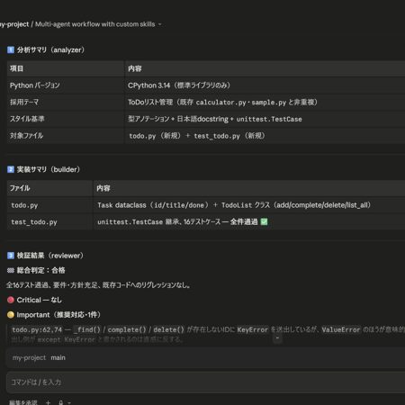
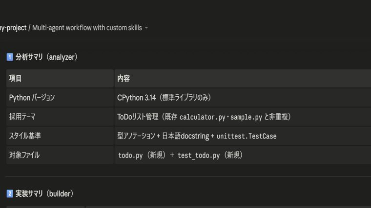
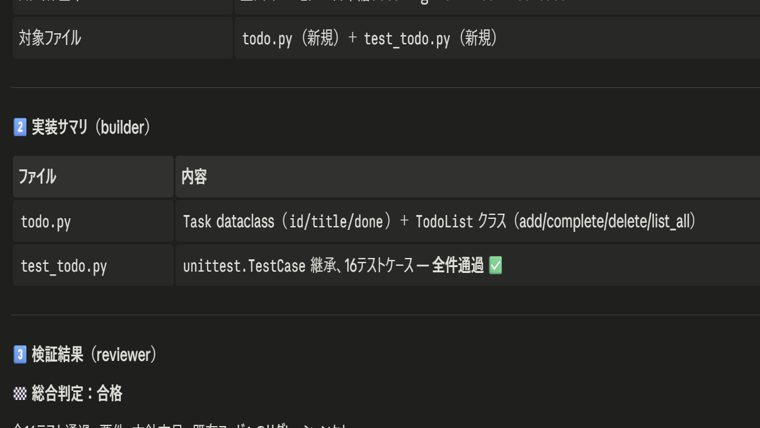
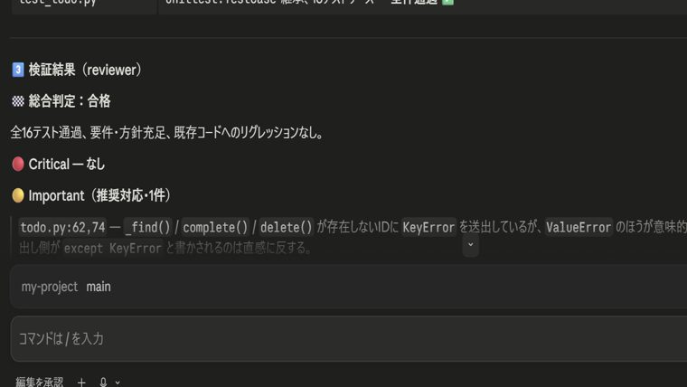

マルチエージェントによる
ToDoアプリ自動生成
analyzer → builder → reviewer の3段で、分析・実装・検証を自動化。
✓ 16テスト全通過 / 合格判定
Works
AIエージェントで生成・検証した、アプリケーションやワークフローの成果物。
カードをクリックすると拡大表示します。

analyzer → builder → reviewer の3段で、分析・実装・検証を自動化。
✓ 16テスト全通過 / 合格判定

文字数計測スキルと連携し、目標字数に収束させる執筆フロー。
✓ 目標字数 ±5% に収束

要約 → 改善提案の3段で、1ファイルを段階的に深掘り。
✓ 重要度別の提案を自動生成

要件充足・バグ・回帰・セキュリティを多観点で検証し合否を判定。
✓ Critical 0 / 重要度別に指摘
優先度を自動提案し、ソート済みの見やすいHTMLボードを生成。
✓ 優先度の自動付与
デザインシステムを読み取り、レスポンシブなLPを実装・デプロイ。
✓ デザイン仕様に準拠
該当する実績がありません。
Workflow
3つの専門エージェントが直列で連携し、要件から実装までを一気通貫で進めます。
01 / Analyze
前提・制約・リスク・実装方針を構造化。コードは編集しません。
↓ 方針を引き継ぐ
02 / Build
分析方針に沿って、実際にコードを実装・修正します。
↓ 変更を引き継ぐ
03 / Review
要件充足・バグ・回帰を検証し、合否を判定します。
✓ 合格 / 要修正
About
Claude Code の拡張機能（SubAgents / Skills / Commands）を組み合わせ、 調査・設計・実装・検証・ドキュメント化までを一気通貫で自動化しています。 「推測で書かない・必ず検証する」を信条に、再現性のある成果物づくりを心がけています。
$ /build-and-review "ToDoアプリ"
analyzer → 前提・制約・方針を整理
builder → todo.py / test_todo.py 実装
reviewer → 16 tests PASS ✓
総合判定: 合格
Critical: 0 Important: 1